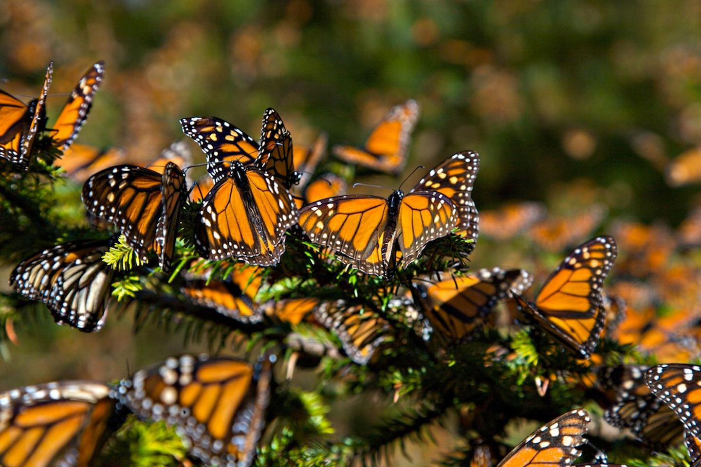

Atractivo Principal
Avistamiento de la Colonia
La colonia más grande de la reserva (~1.62 hectáreas), donde millones de mariposas hibernan formando racimos gigantes en los oyameles y emprenden el vuelo cuando sale el sol (ideal entre 11:00 a.m. y 3:00 p.m.).